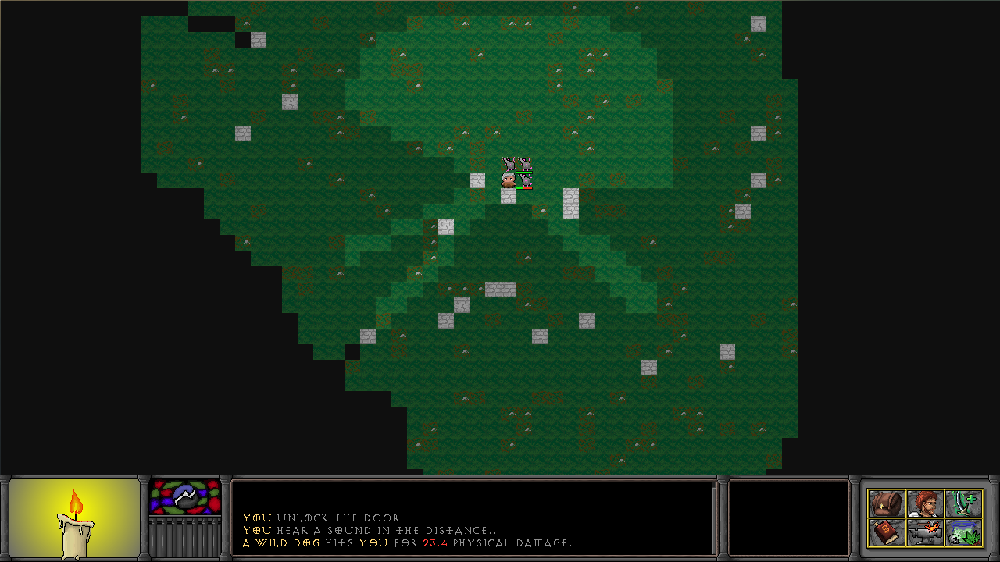
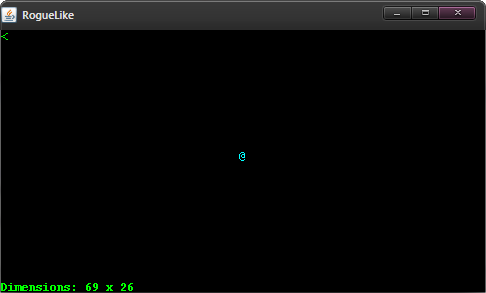

StoneQuest
Screenshots
added sept 2 2013
As of now, it is possible to take screenshots within
StoneQuest by pressing F12 or Print Screen. The
screenshot will capture only the image seen in the
application and will save itself under:
..\Documents\barelyconscious\games\StoneQuest\screenshots\
Note that this feature is currently only available
on Windows.
In lieu of this development, I would like to share with
you the vast amount of screenshots I have taken during
development of my game. These screenshots were often
taken to show others a specific feature that I would
be working on, including alternatives. Note that
mature language may be present in some of these
screenshots.
Interactive Display
added july 23 2013
I have created a simple, interactive display for viewing the changes I plan to make to
StoneQuest's interface in the future using some basic JavaScript. You can view it for yourself
here.

A preview of what the future interface of StoneQuest will look like.
Click the image to view it full size.
The Interface
added july 21 2013
Looking through past screenshots, you will find that the most noticeable changes have been to
the interface. Through development, I have slowly started to see what I want the final product
to be and as this happens, I see how the interface should evolve to meet that vision.
The first graphical design of StoneQuest's interface.
Click the image to view it full size.
The above screenshot is from an old code base that I have not worked on since January 2012 when
the spring semester began. The game never progressed beyond the point of movement, the features
visible were for display only and the player could not interact with them. Picking the project
back up again in July 2012, I started over with new goals in mind.
Coming back with fresh ideas and new goals.
Click the image to view it full size.
A short 100 hours after starting fresh, I had a fully functional, albeit shallow, game. The
features in the above screenshot were working: the player could upgrade his stats, use, drop and
pick up items, attack monsters and collect currency in the form of gold. The only area in which
the game was lacking was content – there was only a rat for montsers, no quests, bland
items and no world. Looking back, this simple interface still pleases me and I feel a game could
be built from it. But I wanted more from a game that up to that point already consumed tens of
hours of my life.
Introducing graphics.
Click the image to view it full size.
After hundreds of hours later, spread across six months, I had finally implemented a richer
interface with 2D graphics to StoneQuest. It was at this point I decided what was truly lacking
was mouse support. I had originally intended on programming the game to be a true roguelike
game that simply had improved graphics. Adding mouse support took the game in an entirely
different direction for me.
The most recent iteration of StoneQuest.
Click the image to view it full size.
So now here we are today, July 21, 2013, a year and a half since I started this project back in
December 2011. Every inch of the interface has been altered since then, and after countless
hours designing and implementing this interface... I am still not satisfied. In early June 2013,
I began work on redesigning StoneQuest's interface, from the ground up. I have ignored coding
until I have finished the design of the interface to ensure elements fit together perfectly. I
have spent the past month and a half working on the interface and I am nearly finished.
This is what is next for StoneQuest's interface.
Click the image to view it full size.
The screenshot shows several windows open: the player's inventory (right), the item upgrade
interface (left) and the brewing window (center). The text box in the lower center portion is
the information log, where game updates are relayed via text to the player. The black box to
the left of the window icons on the lower right is a tooltip box where information about what
the player's cursor is hovering over is displayed. Finally, the lower left area, where a candle
is burning bright, represents how much health the player has. I am still toying with this idea,
so it is far from permanent.
Crafting
added july 21 2013
In all the games I have played over the years, a rich and rewarding crafting system has been one
of my favorite elements of gaming; so naturally, StoneQuest will have a crafting system. I plan
to try and take all the best crafting system features from other games when designing my own
system.
A very important feature of the system will be the ability to upgrade items; and every item in
the game can be upgraded. Upgrading items will require materials which can be acquired through
several venues: merchants, monster drops, quest rewards or through Salvaging other items. In
the games that have an upgrade system, I find that after awhile, upgrading becomes either too
tedious or too wasteful. I want the player to want to upgrade his or her items as often as
the materials become available.
Story
added july 21 2013
I have always found interesting those stories of discovering cities, long since forgotten, whose
culture and people have faded into legend. The best of which are those whose civilization
vanishes with no apparent cause because those are the stories that leave your mind to wander in
aimless speculation, free to concoct wild, imaginative reasons.
Dwarves are also an interesting fictional species, used in countless fantasy stories, from the
popular Lord of the Rings trilogy to all sorts of genres of video games. Their origin and
culture vary from fiction to fiction, with a few notable characteristics. I want to build on the
stories I have read and played while exploring other areas in as much detail as I can to
expand and shape the species within StoneQuest.
Inspired by Dark Souls, I want to create a deep, complicated and broken story, with holes left
to be filled by the player and not by me. The most inspiring stories are those that leave you
wanting more, not giving you more.
StoneQuest will having a questing system which will be a useful device for telling my story to
players, but it will not be the only device. Items spread across the game, some easy and some
difficult to obtain, will somehow tell the player how they fit into my story. Humanoids and
other monsters capable of speech will be used as well.
Background
added july 21 2013
StoneQuest began as a simple Roguelike
application in Java back in December 2011 in order to introduce myself to game
design and mechanics.

The earliest iteration of StoneQuest, taken in January 2012.
Sometime during development, I made the decision to create a full, production-quality game
complete with artwork, sound effects and (hopefully) a deep and interesting story.
The most recent screenshot of StoneQuest, taken in July 2013.
Click the image to view it full size.
In March 2013, I added full mouse support to the game, allowing for a much richer experience
for the player. Prior to that, input was limited to keyboard only, modeling the original Rogue
experience.
Artwork
added july 21 2013
More a matter of convenience than expertise, all of StoneQuest's artwork has been done entirely
by myself.
Currently added buffs and debuffs.

Original player inventory.
Several world tiles.
My skills as an artist only go so far and I am seeking a more talented individual to aid me in
this area of development. Those interested may send me an email at
mattschwartz@utexas.edu. Please include some
information about yourself, samples of your work (preferably based on my current artwork) as
well as pricing. I am willing to negotiate pay for quality work.
Sound Effects
Sound effects are extremely important to the player's immersion into any RPG. I intend to
create as many of the sound effects for StoneQuest myself, with help from a friend who
is a sound engineer as well as some royalty free sound effects I find online.
Bugs & Disclaimer
I hold no responsibility if playing the game causes irreparable damage to your computer (though,
that is highly unlikely). Please be aware that mature language may be present in StoneQuest.
I ask that you try the game with an open mind. Since it is still
in very early development, it will not be very fun as there is no real objective, yet.
There will be plenty of bugs that you will most likely encounter will playing any game
in early development. The game will likely crash on you and you may not even know why. If
you would like to help me squash any bugs you encounter, you can email me
here. Please be as
descriptive as possible when describing the bug, including any steps to reproduce it;
screenshots can also be helpful. Also, please provide what operating system you were using when
the bug occurred.
Download
You can download the most recent iteration of StoneQuest (v 0.7.0a) by downloading the jar
or, if that doesn't work, an executable,
(~13 MB) and running it like you would any executable (i.e., by double clicking it). Please note that this since this is the most recent release that,
while it is updated very frequently, it is highly unstable and may contain new features as well as removed features.
You can also download a legacy version of StoneQuest (v 0.6.9a) here
which will no longer be updated. This version of StoneQuest marks the end of the old interface.
Basic Controls
StoneQuest uses a combination of keyboard and mouse input, whose functions are outlined below.
Some controls are not yet functional, but their purpose is defined for future reference; these
controls are struck through for reference.
- Keyboard
- Move with arrow-keys or WASD
- 'space' - wait a turn
- 'i' - open the inventory window
- 'c' - open the character window
- 'u' - open the item upgrade window
- 'j' - open the journal window
- 's' - the next item you click will be salvaged
- 'b' - open the brewing window
- esc - hide all visible windows;
if no windows are visible, opens the Options menu
- 'F12', 'Printscreen' - take a screenshot
- To attack enemies or interact with a chest, all you need to do is walk into them
'p' - pick up an item on the ground'tab' - displays information about the zone'ctrl+q' - quits the game
- Mouse
- Left click to move on a visible space
- Left click to use an item in the inventory
- Right click on the world to gain more information about the tile
- Scroll up/down to move up/down in the text log
Right click on an item in the inventory for more options
Source Code
I plan to host the source for StoneQuest upon completion. As the project is still in early
development you will not find the source readily available here as I do not wish to publish my
unfinished work. If you wish to obtain the source code, you can email me
here and describe your reason for wanting the
source. I will consider releasing the source if I find your reason compelling enough.

{kind=link}
{kind=link}
{kind=link}
{kind=link}